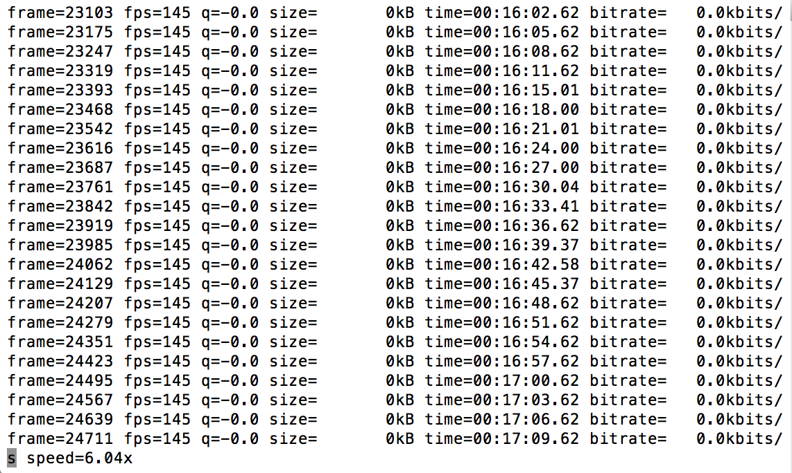

6. FFmpeg Basics
6.1. Basic FFmpeg Command Syntax
FFmpeg command structure:
ffmpeg [global_options] {[input_file_options] -i input} {[output_file_options] output}
A simple FFmpeg command for transcoding to an H.264 file with AAC audio might look something like this:
ffmpeg -i input_file -c:v libx264 -crf 18 -preset slow -c:a aac -b:a 256k output_file
Let’s look at what each part of this command does.
ffmpeg
This is where we tell the command line which program we want to run.
In this case we are calling FFmpeg.
If you have one of the static builds of FFmpeg, you could also use the full path to that static build file here (just drag and drop the “ffmpeg” file on the command line!) or
cdto that directory and run commands from there.
-i input_file
Input files are indicated using
-i.input_fileis just a generic stand-in to tell us that, whatever your input file is, it should go here. If you wanted to run this command on an actual file, you would need to replace this with the path to the particular file that you want to transcode (just drag and drop it on the command line).There are some cases where you may want to specify multiple inputs in a single command. You can repeat the
-icommand multiple times to accomplish this (i.e.-i input_1.mov -i input_2.wav).
-c:v libx264 -crf 18 -preset slow
-c:vindicates that we are specifying video codec settings that we want to use for our output.This is followed by the video encoder that we want to use. In this example we are using
libx264, which is the name that FFmpeg uses to call the free and open source H.264 encoder library, x264.Some codecs may have multiple encoders available to choose from. For example, FFmpeg has three encoders to choose from for ProRes (
prores,prores_ksandprores_aw).-crf 18 -preset sloware encoding settings specific to the x264 encoding library that configure some of the compression settings for the output.A detailed explanation of these settings as well as other settings that we could have used here can be found on the FFmpeg Encoding wiki’s H.264 page.
Encoding settings will vary from one codec to another, so it’s always a good idea to read the documentation and look at some examples to get a better idea of the exact settings you’ll want to use.
-c:a aac -b:a 256k
-c:aindicates that we are specifying audio codec settings that we want to use for our output. Notice that this is similar to the structure of what we had done for the video codec, but with a different codec library and different settings.In this case we are using the
aacencoder for the audio.-b:a 256kare encoding settings for the AAC encoding library. These settings tell FFmpeg to use a constant bitrate of 256kB/s for the audio.A detailed explanation of these settings as well as other settings that we could have used here can be found on the FFmpeg Encoding wiki’s AAC page. Note that this example uses the native FFmpeg AAC encoder, but FFmpeg can also be configured with another AAC encoder,
libfdk_aac.If our input video had no audio streams we could leave
-c:a aac -b:a 250kout of the command entirely since there would be no audio to encode.If we wanted to copy the audio from our input_file without re-encoding, we could have used
-c:a copyinstead.If we had left out any audio codec settings, FFmpeg would have chosen a default setting for us based on the output format we specified.
output_file
This part of the command specifies the full path to our output file.
Similar to how
input_filehad been used as a generic stand-in for the input, this is just a generic stand-in for an output file that needs to be replaced with a real output file path if we actually want to run this command. In this case, we might output an H.264 file with AAC audio to a.mp4or.movfile (i.e./Users/myUserName/Videos/example.mp4).Unlike the input, our output file does not need to be indicated with any kind of flag like
-i. FFmpeg automatically assumes that this is our output based on the fact that it appears at the end of the command.
6.2. Interpreting FFmpeg Messages
By default FFmpeg will output a lot of information to the command line as it processes files.
6.2.1. Progress
FFmpeg will start by outputting the banner with information about the FFmpeg version and how it is configured.
This will be followed by information about the input and output files you have set with your command.
As FFmpeg processes the encoding, it will output a regularly updating string with information about the fps that the encoding process is running at, bitrate, etc.
This output can be useful for judging how long processing might take or how large your output file might be.
If you want to stop an encoding after it has started you can press “q” to interrupt the process.
FFmpeg may output other information such as errors or warnings to the command line as well.
6.2.2. Warnings
Warnings are indicated by yellow text in FFmpeg’s output.
Generally warnings provide you with information about things that may cause issues, but do not prevent an operation from running.
Many warnings are benign, but it is always a good idea to look up what a warning means if you aren’t sure.
For example, unsupported timecode streams in an input will often cause warnings.
6.2.3. Errors
Errors are indicated by red text in FFmpeg’s output.
You will typically encounter errors when certain settings are used incorrectly. Often these will prevent an operation from running.
For example, FFmpeg will output an error message if you try to use
-c:v copywith a video filter (-vf) because these two settings contradict one another.
6.2.4. Changing Verbosity
FFmpeg, FFprobe, and FFplay have various settings for adjusting the amount of information that gets output to the command line as they runs.
For example, in the Verifying Installation section we used
-hide_bannerto suppress the banner that FFmpeg typically outputs when it runs.The
-loglevelcommand can also be used to adjust the verbosity of the output (-vcan also be used in place of-loglevel). You can run the commandffmpeg -loglevel -hto see a list of options. Documentation about these settings can also be found HERE.ffmpeg -loglevel quiet -i input_file output_filecan be used to prevent FFmpeg from writing anything to the command line while running.
6.2.5. Overwriting Files
If your output file already exists, FFmpeg will prompt you asking if you want to overwrite the existing file before it proceeds.
If you type
yand press enter, FFmpeg will overwrite the existing file. If you typenand press enter, FFmpeg will stop the command you are trying to run.You can tell FFmpeg to automatically select “yes” using the
-yflag before your input (i.e.ffmpeg -y -i input_file output_file).